Struktur der Energieniveauaufspaltung des Ions Er3+ in einem YAG-Kristall
MultiPanel-EnergyLevel
Zusammenfassung
In diesem Tutorial wird ein Diagramm erstellt, um die Struktur der Energieniveauaufspaltung des Er3+ Ions in einem YAG-Kristall zu zeigen.

Origin-Version mind. erforderlich: 2015 SR0
Was Sie lernen werden
Dieses Tutorial zeigt Ihnen, wie Sie:
- ein Diagramm durch Auswahl eines Teils der Daten aus einer Spalte erstellen,
- Symboleigenschaften festlegen,
- Diagramme zusammenfügen,
- Größe und Position eines Layers ändern.
Schritte
- Öffnen Sie ein leeres Arbeitsblatt. Wählen Sie Hilfe: Ordner öffnen: Sample-Ordner ... im Menü, um den Ordner "Samples" zu öffnen. Öffnen Sie in diesem Ordner den Unterordner Graphing. Dort befindet sich die Datei Van_Rudd_Er_Energy_Levels.txt. Ziehen Sie diese Datei per Drag&Drop in das leere Arbeitsblatt, um sie zu importieren.
- Markieren Sie Spalte B und erstellen Sie ein Punktdiagramm durch Auswahl von Zeichnen: Einfache 2D: Punktdiagramm.
- Klicken Sie zum Öffnen des Dialogs Details Zeichnung doppelt auf die Datenpunkte. Ändern Sie auf der Registerkarte Symbole des rechten Bedienfelds das Symbol und die Symbolfarbe, wie im folgenden Bild zu sehen.
- 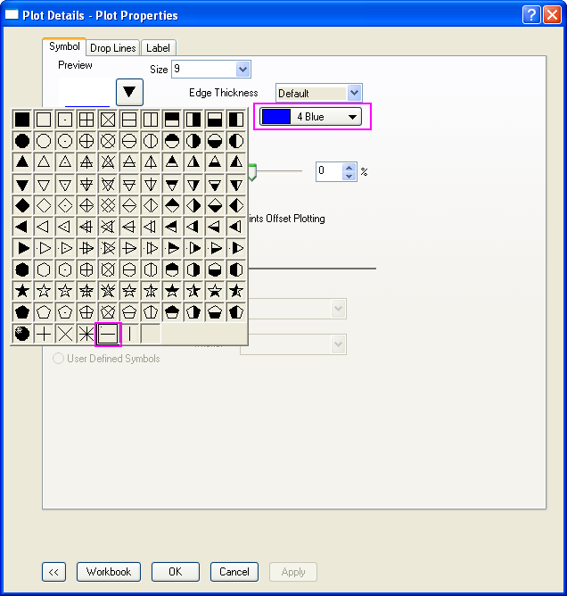
- Aktivieren Sie auf der Registerkarte Ankerlinien das Kontrollkästchen Horizontal und setzen Sie die Breite auf 1. Klicken Sie auf OK, um diese Änderungen anzuwenden.
- 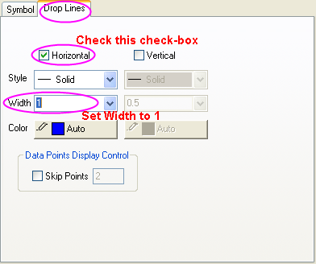
- Klicken Sie doppelt auf die X-Achse, um den Dialog Achsen zu öffnen. Legen Sie bei ausgewähltem Symbol Horizontal auf der Registerkarte Skalierung die Skalierung der X-Achse auf von 0 bis 1 fest:
- 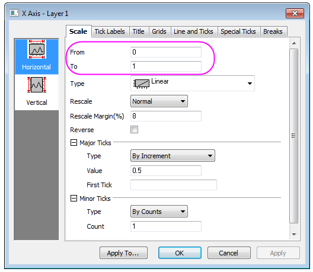
- Gehen Sie jeweils zu den Registerkarten Linie und Hilfsstriche, Beschriftung der Hilfsstriche und Titel, stellen Sie sicher, dass das Symbol Unten ausgewählt ist, und deaktivieren Sie das Kontrollkästchen Linie und Hilfsstriche oder Zeigen, um alle Elemente auf der unteren X-Achse auszublenden, einschließlich Linie und Hilfsstriche, Beschriftungen und Titel:
- 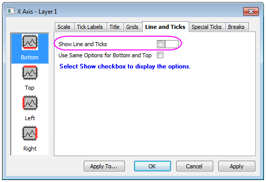
- Legen Sie bei ausgewähltem Symbol Vertikal auf der Registerkarte Skalierung die Skalierung für die Y-Achse folgendermaßen fest: Von: 0, Bis: 24000, Wert (in der Gruppe Große Hilfsstriche): 2000.
- Wählen Sie das Symbol Links auf der Registerkarte Titel und ändern Sie den Text für den Titel der Y-Achse in Energy Levels (cm\+(-1)):
- 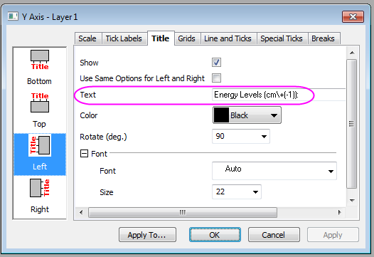
- Wählen Sie das Symbol Links auf der Registerkarte Linie und Hilfsstriche aus. Wählen Sie dann die Option Innen in dem Auswahlmenü für Große Hilfsstriche und Kleine Hilfsstriche:
- 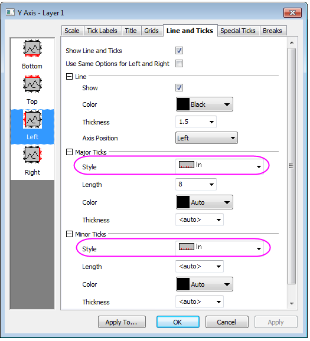
- Klicken Sie auf OK, um die Achseneinstellungen zu speichern. Löschen Sie das Legendenobjekt im Diagramm, indem Sie es markieren, mit der rechten Maustaste darauf klicken und die Option Löschen im Kontextmenü wählen. Das Diagramm sollte folgendermaßen aussehen.
- 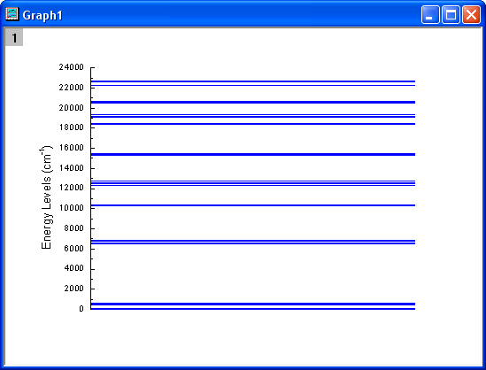
- Markieren Sie die Zellen 1 bis 8, 9 bis 15, 16 bis 21, 22 bis 26, 27 bis 31, 32 bis 43 und 44 bis 48, um die Punktdiagramme über das Menü Zeichnen: Einfache 2D: Punktdiagramm zu erstellen, und wiederholen Sie dann Schritt 3 bis Schritt 11, um weitere 7 Diagramme zu erstellen. Setzen Sie den Wert des Inkrements der Y-Achse (Schritt 7) auf 100 und die Werte für Von und Bis auf 0 bis 600, 6500 bis 6900, 10200 bis 10500, 12300 bis 12800, 15200 bis 15600, 18300 bis 20800 bzw. 22200 bis 22700. Auch der Titel der Y-Achse (Schritt 8) unterscheidet sich mit \+(4)I\-(15/2), \+(4)I\-(13/2), \+(4)I\-(11/2), \+(4)I\-(9/2), \+(4)F\-(9/2), \+(4)F\-(7/2) \+(2)H2\-(11/2) \+(4)S\-(3/2) bzw. \+(4)F\-(3/2) \+(4)F\-(5/2). Setzen Sie die Großen Hilfsstriche und kleinen Hilfsstriche auf Keine.
- Um den Drehwinkel des Y-Titels, der in Schritt 9 erstellt wurde, zu ändern, markieren Sie den Y-Titel, wählen Sie Einstellungen im Kontextmenü und setzen Sie Drehen (Grad) in dem aufgerufenen Dialog Objekteigenschaften auf 0.
- 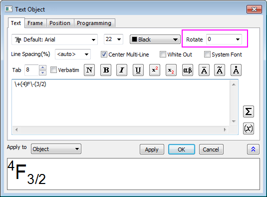
- Aktivieren Sie eines der Diagramme und wählen Sie im Menü Grafik: Grafikfenster zusammenfügen. Ändern Sie die Einstellungen, wie unten zu sehen, und klicken Sie auf die Schaltfläche OK, um die 8 zuvor erstellten Diagramme zusammenzufügen.
- 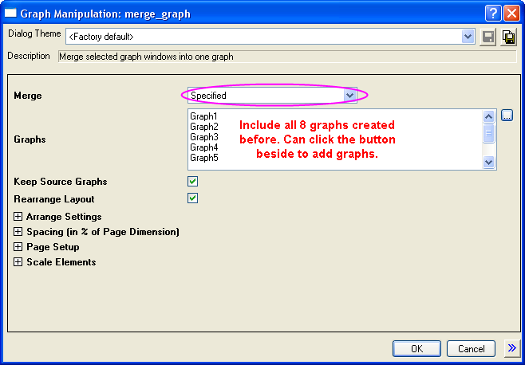
- Klicken Sie zum Öffnen des Dialogs Details Zeichnung doppelt auf das zusammengefügte Diagramm. Ändern Sie auf der Registerkarte Größe und Performance des Layers 1 den Layerbereich wie folgt.
- 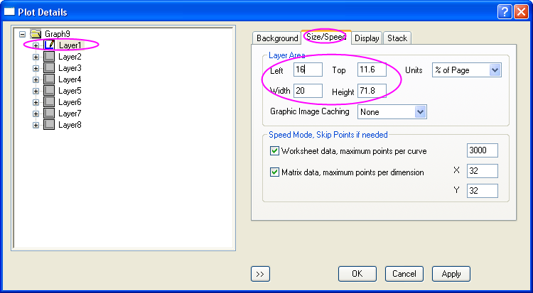
- Legen Sie die Größen der anderen Layer auf 15 x 15 fest (Breite und Höhe in Schritt 15) und verschieben Sie sie in die gewünschte Position. Passen Sie die Größe der Y-Achsenbeschriftung an und fügen Sie die entsprechenden Pfeile und Kreise an. Das Diagramm sollte folgendermaßen aussehen:
- 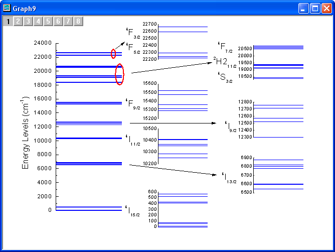